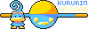

Wellcome to Kururin Village!
Kururin Village is a unofficial fan website by Cco0orn and RevilleAJ. It's a personal shrine about Eighting's Kuru Kuru Kururin series.
For collect any Kururin-related such like official contents, fan project and more mystery!
Feel free to link us!
Leave a comment to us!